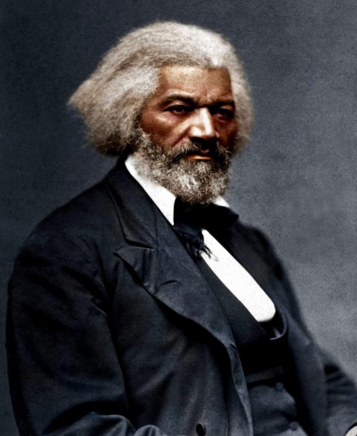

There are many events that shaped the current state of American education for Black students. Historically, the United States system has made it difficult for African Americans to advance in society. After slavery and the emancipation of enslaved people, abolitionists and orators took initiative in providing educational opportunities for Black people in order to gain power. Their efforts definitely began the movement for Black education which continued into the Civil Rights era. Jim Crow laws and segregation maintained the obstacles preventing Black children from receiving adequate education and Black teachers from being hired as educators in public schools. One case that was significant to the Civil Rights movement and Black education was Brown vs the Board of Education. With this case, segregated schools were ruled as illegal and the case opened the door for many issues within the education system relating to black students and teachers. This case remained relevant in the years to follow it, and as Black students gradually gained more oppurtunities at education, the previous construction of American education is being reformed. In addition to this, there is a gradual awareness around the structure of American education that functioned for centuries and it is being challenged by people who are willing to challenge it.
In Angela Y Davis’ Women, Race & Class, she discusses emancipation and how it was misunderstood as immediate freedom and in order to work towards some type of freedom, Black women and men would have to gain land, the ballot and education. However, enslaved people were not allowed to be educated, let alone learn to read and this proved to be an obstacle that Black people at the time had to work towards overcoming. The possibilities that were to be presented by acquiring knowledge were endless and struck fear into white supremacists. This fear gave them the impression that if an enslaved person is educated, it actually 'ruins them'. In the words quoted by Davis, "...teaching slaves to read and write tends to dissatification in their minds, and to produce insurrection and rebellion." The history of deprivation fueled people like Frederick Douglass to seek knowledge on his own. Born into slavery, Douglass eventually learned to write, perfecting this by writing all the words from Webster’s Spelling-Book, and to read by examining the Holy Bible at night. Frederick Douglass grew to be a notable Black free thinker, writer and abolitionist.
Social reformer, abolitionist, and writer Frederick Douglass
When Black people learned that “forty acres and a mule” was a myth, they realized that in order to seek some sort of freedom and power, they’d have to fight for land and political power. Because Black people were deprived of education for centuries, this task was very difficult and did not get any easier. Davis suggests that white supremacy led to the ideology of Black people being allegedly “incapable of intellectual advancement” but in reality, Black people always wanted to acquire education. They were facing obstacles that attempted to prevent Black people from getting the education they desired. Davis states that in 1787, Black people in Massachusetts petitioned for the right to attend Boston’s free schools. The petition was rejected and prompted the leader of this act, Prince Hall, to create a school in his own home for them. Another display of Black demand for education comes from an African born and former slave woman, Lucy Terry Prince. In Davis' book, she describes how Prince addressed the racist and prejudiced admissions board of Vermont's Williams College for Men after they refused to admit her son. She defended Black people's desire and right to education to the board and to the highest court in the land. Her actions solidified her as the first woman to have addressed the Superme Court of this country.
Lucy Terry Prince and Prince Hall
During this era, women were building new schools for Black children and providing opportunities for them. One of these influential people was Katy Ferguson, a former slave who established Katy Ferguson’s School for the Poor in New York. She accepted pupils who were poor and both Black and white. Another woman Davis names is Prudence Crandall, a white woman who defended Black girls’ right to attend her school in Canterbury, Connecticut. The country tried to shut down many schools that hosted Black children, an example of how the racist officials tried to halt the advancement of Black people in the country. Crandall and another white teacher by the name of Margaret Douglass were imprisoned for teaching Black children. What these women did was a great example of sisterly solidarity with Black women and was helpful to Black people’s fight for the right to education.